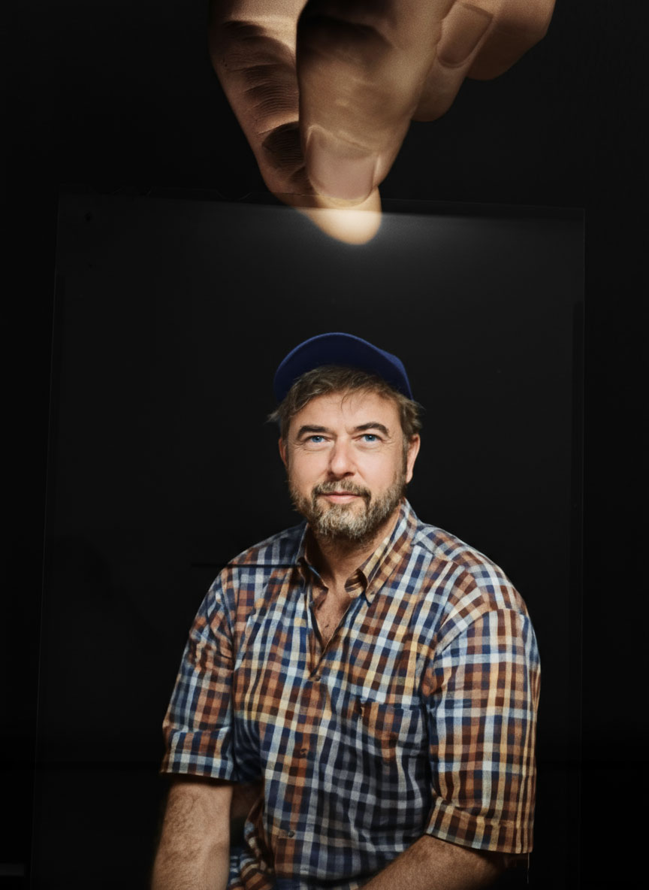

Biography

My practice is rooted in light—its construction, its interpretation, and its ability to shape meaning. I came to photography at an early age through a fully manual camera, which taught me to read light instinctively rather than rely on automation. This formative experience continues to inform my approach: technical choices are always in service of perception and emotion.Alongside my digital and cinematic work, I maintain an ongoing engagement with analog black-and-white photography. Working primarily with medium and large format cameras allows for a slower, more deliberate relationship to image-making, where each exposure is considered and physical. This approach also enables a material continuity in my work: I continue to use the same black-and-white film stocks I began working with in the early 1990s. This consistency over time is not nostalgic, but methodological—providing a stable visual and tonal reference that anchors a long-term exploration of light, form, and photographic intention.
Trained in cinematography at ENS Louis-Lumière, my background in moving images strongly influences my photographic work. I approach each image as a constructed space, where lighting, framing, and color are carefully composed to create a narrative tension between reality and artifice. Whether working in photography or film, I am interested in the point where precision meets intuition (more on Unifrance, or on IMDB)..
A long-term collaboration with artist and photographer Sophie Delaporte has been central to my practice. Within this partnership, I focus on lighting design, digital workflow, and post-production, contributing to images that blur the boundaries between fashion, art, and visual experimentation. Our work often involves elaborate lighting setups and a controlled studio environment, allowing for a deliberate manipulation of atmosphere and form.
In parallel with my creative work, teaching plays an important role in my practice. Sharing knowledge about image-making: particularly lighting, digital processes, and visual rigor, has reinforced my belief that technique is not an end in itself, but a tool for developing a personal and critical visual language. CE3P, Speos International Photography School
Some of my work is now available for licensing on plainpicture
Follow me on INSTAGRAM / VIMEO / LINKEDIN
Get in touch →